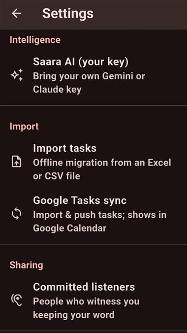

Every setting in one place — and how your data stays yours.
| Setting | What it does |
|---|---|
| Morning brief | "Open your day" reminder — pick the time (default 7:00 AM). Reviews yesterday's open items and commits to today. |
| Evening review | "Complete your day" — give each remaining task its disposition (default 9:00 PM). This is where a "missed" is ever set — never silently. |
| Saara AI (your key) | Your Gemini/Claude key. See Ask Saara & your AI key. |
| Import tasks | Offline migration from an Excel or CSV file. |
| Google Tasks sync | Connect Google Tasks & Calendar. See Google sync. |
| Committed listeners | People who witness you keeping your word. See Sharing & reports. |
| Storage | What photos, video & audio are using — and reclaim space. |
| Export all my data | A local .zip of every task, area & capture — you choose where it goes. |
| Sync between my devices | Wi-Fi / file / folder sync. See Sync your devices. |
| Reset local data | Start this device over. A two-step, type-"RESET" safeguard — with an export offered first. |
| How Saara works | The in-app tour (the coach cards). |
| Saara for Windows | (Mobile) Get the desktop app. |
| Send feedback to the maker | Opens your email app — nothing is sent automatically. |

Full details: Privacy policy · Delete your data.